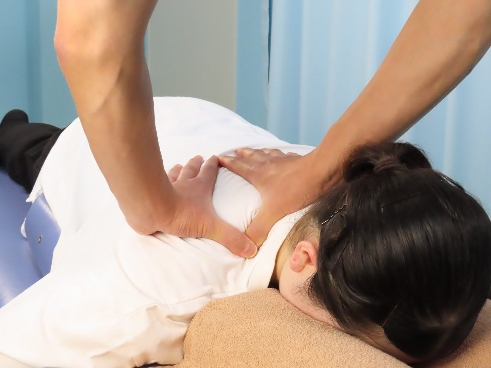
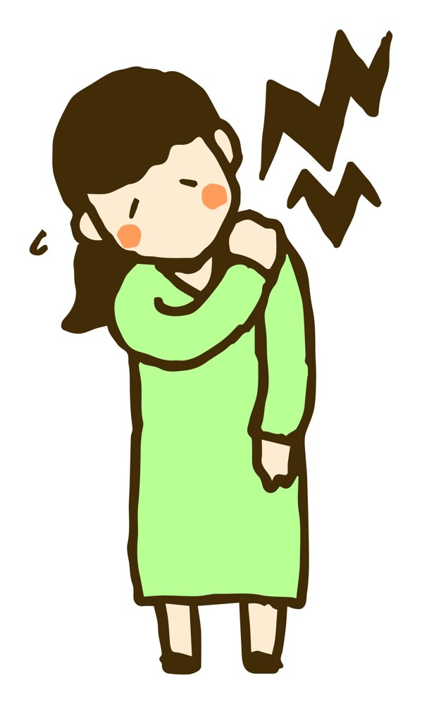
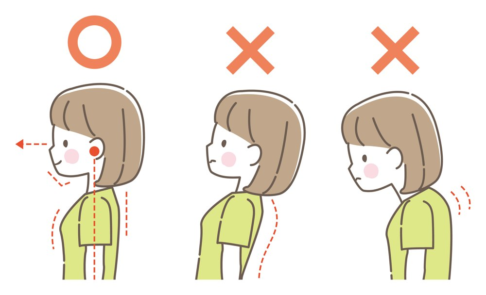
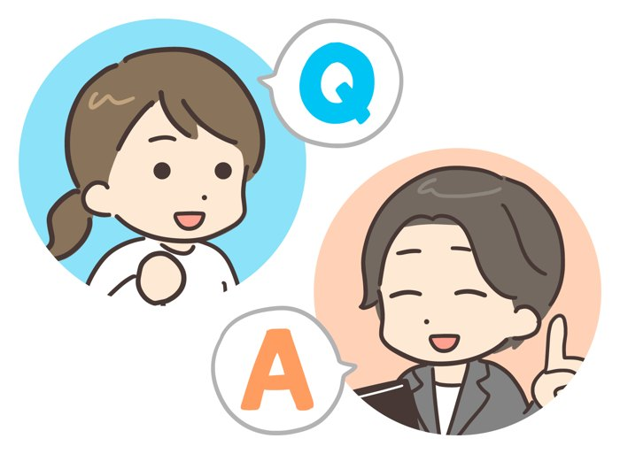

症状から探す｜首・肩
首・肩の痛み、寝違え
朝起きたら首が回らない方へ
朝起きたら首が回らない。振り向くと痛い。寝違えは「寝ている姿勢が悪かったから」と思われがちですが、普段の姿勢で首や肩にたまっていた負担が、きっかけになっていることもあります。
当院では、痛い首だけでなく、背中や骨盤からのつながりで原因を探します。
予約優先制です。お電話：011-384-5454 日曜・祝日も受付


こんなお悩みはありませんか
ひとつでも当てはまったら、
ご相談ください
- 朝起きたら首が痛くて横や上を向けない
- 肩こりがひどく、頭まで重く感じることがある
- スマホやパソコンを見ている時間が長い
- 寝違えを何度もくり返している
- もんでもらうとその場は楽だが、すぐ戻ってしまう
痛みの理由
首・肩の痛みには理由があります
頭の重さは、体重のおよそ1割ほどあると言われています。頭が前に出た姿勢になると、首や肩の筋肉はその重さを支えるために、ずっと引っぱられた状態になります。
そして、頭が前に出る姿勢は、首だけの問題ではありません。骨盤が後ろに傾くと猫背になり、頭と首が前に出やすくなります。

- 頭が前に出た姿勢スマホやパソコンをのぞきこむ姿勢が続くと、首や肩の筋肉に負担がかかり続けます。
- 骨盤から始まる猫背骨盤が後ろに傾くと背中が丸くなり、その上にある首や肩にも影響します。
- 同じ姿勢が長い動かない時間が長いほど筋肉がかたくなり、少しの動きでも痛めやすくなります。
当院での施術
今の痛みとその先まで
- STEP 1お話と検査いつ・どんな動きで痛めたか、どこが痛いかをうかがい、姿勢や動きを確かめます。分かったことは、言葉で分かりやすくお伝えします。
- STEP 2痛みをやわらげる施術寝違えのように急に痛めたときは、首を無理に動かしたり、強くもんだりしません。ハイボルトや鍼など、痛みの少ない施術から始めます。
- STEP 3くり返しにくいカラダへ痛みが落ち着いてきたら、骨ぴか整体で首・背中・骨盤のユガミを整え、座り方「ON-OFFの姿勢」などをお伝えします。
くり返さないためには、施術だけでなく、普段のカラダの使い方も大切です。正しいカラダの使い方／骨ぴか整体（骨格矯正）
ご自分でできること
痛めたときに気をつけたいこと
- 痛い方向へ無理に首を回したり、勢いよく鳴らしたりしない
- 痛い場所を強くもまない
- 枕の高さが合っているか、見直してみる
- スマホは目の高さに近づけてのぞきこまないように
こんなときは先に病院へ
- 腕や手にシビレがある、力が入りにくい
- 激しい頭痛やめまい、ろれつが回りにくい
- 熱をともなう首の痛みがある
- 頭を強く打ったあとから痛む
当てはまるときは、先に医療機関を受診してください。迷ったときは、お電話やLINEでご相談ください。
保険について
健康保険は使えますか？
寝違えなど、急に痛めたものは健康保険の対象になることがあります。原因がはっきりしない慢性的な肩こりは対象外です。
保険が使えるかは、症状と原因によります。受付で一緒に確認しますので、お気軽にお聞きください。マイナ保険証または資格確認書をお持ちください。
よくあるご質問
よくあるご質問
肩こりでも見てもらえますか？
はい、ご相談ください。慢性的な肩こりは保険の対象外のため、骨ぴか整体や鍼などの自費の施術でのご案内になります。
首の施術が少し怖いです。
施術の前に、何をするかをご説明します。苦手なことや不安なことは、遠慮なくお伝えください。力加減も調整します。
交通事故のあとから首が痛いのですが。
交通事故のケガは、手続きの流れも含めてご案内しています。交通事故でケガをされた方へをご覧ください。

つらいときはがまんせずにご相談ください
予約優先制 〒067-0031 北海道江別市元町32-1 無料駐車場12台 日曜・祝日も受付